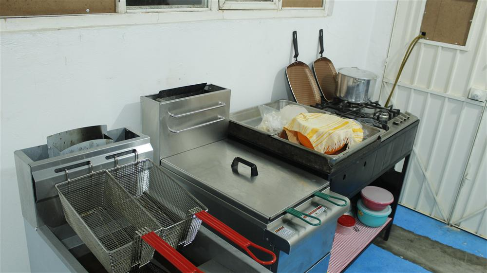

Mucha gente nos pregunta: "¿Por qué la hamburguesa de Mr. Papas sabe tan diferente?". Hoy, nuestro Chef rompe el silencio y te comparte algunos trucos para entender el arte de la hamburguesa de arrachera.
1. La Temperatura es Clave
Nunca ponemos la carne fría directamente del refrigerador. Dejamos que "respire" un poco. Esto asegura que cuando toque la parrilla, el calor se distribuya uniformemente, logrando ese sellado exterior que guarda todos los jugos dentro.
2. El Corte de Arrachera
No usamos mezclas procesadas. Nuestra arrachera es seleccionada por su marmoleo (esa grasita blanca que se derrite al cocinar), lo que le da un sabor intenso que no necesita químicos.

3. No la "aplastes"
Un error común es presionar la carne contra la parrilla. ¡Error! Al hacerlo, solo estás sacando el jugo que le da sabor. Nosotros dejamos que se cocine a su tiempo, respetando sus fibras.
En Mr. Papas, cada hamburguesa es una obra de ingeniería gastronómica. ¡Ven y comprueba estos secretos en tu próxima mordida!